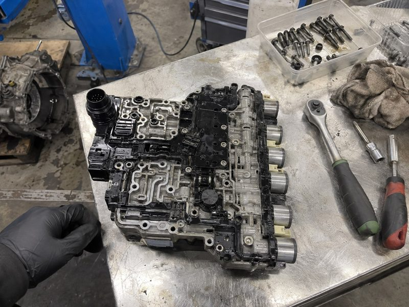
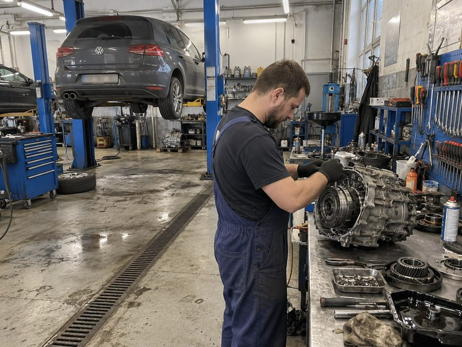
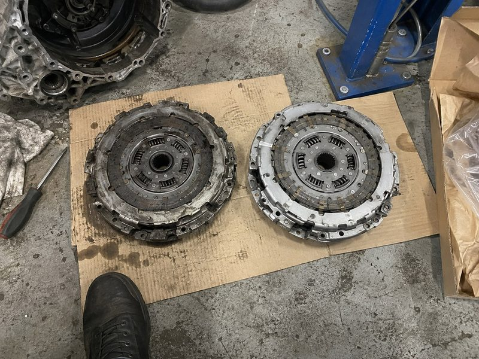
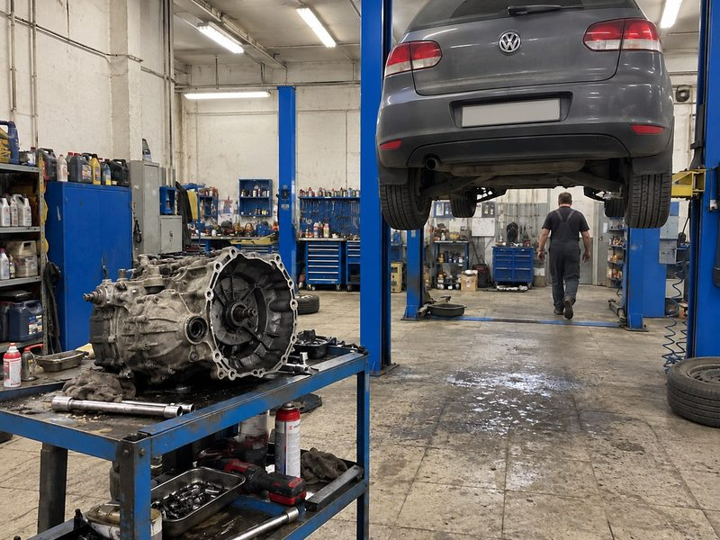
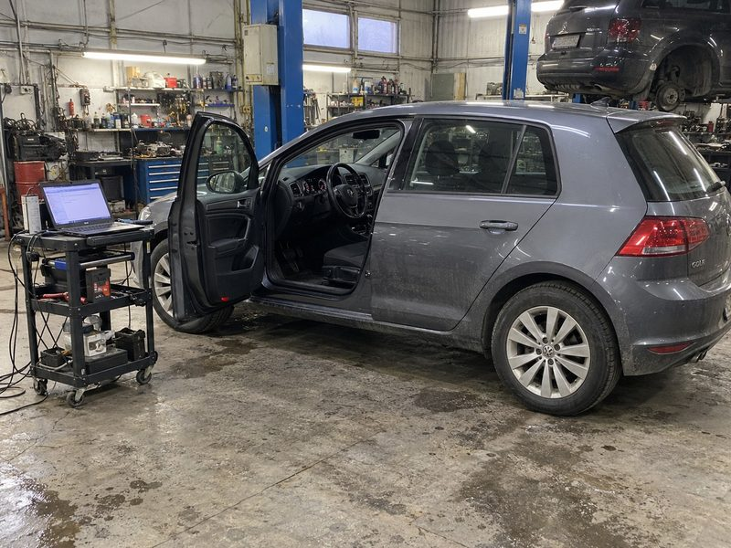
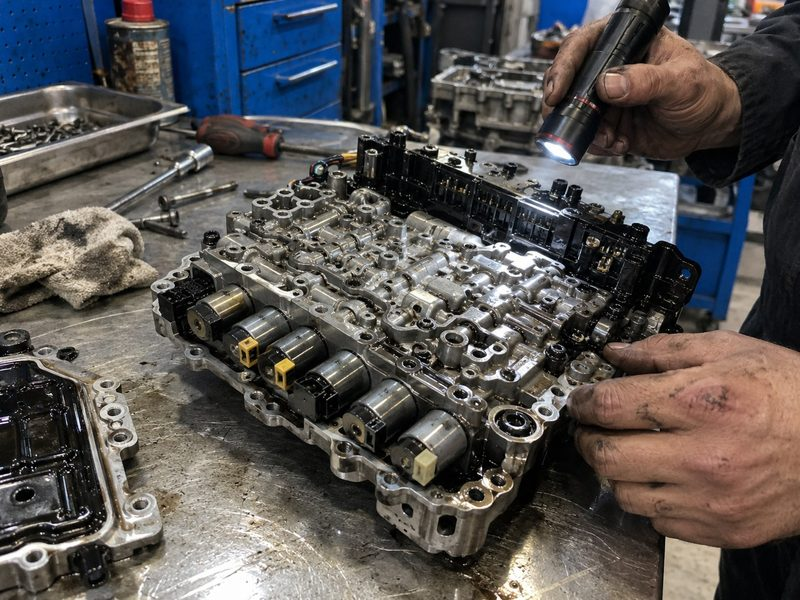
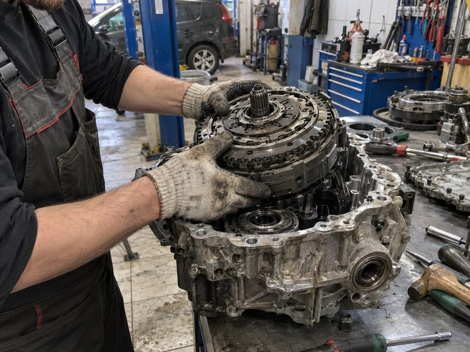
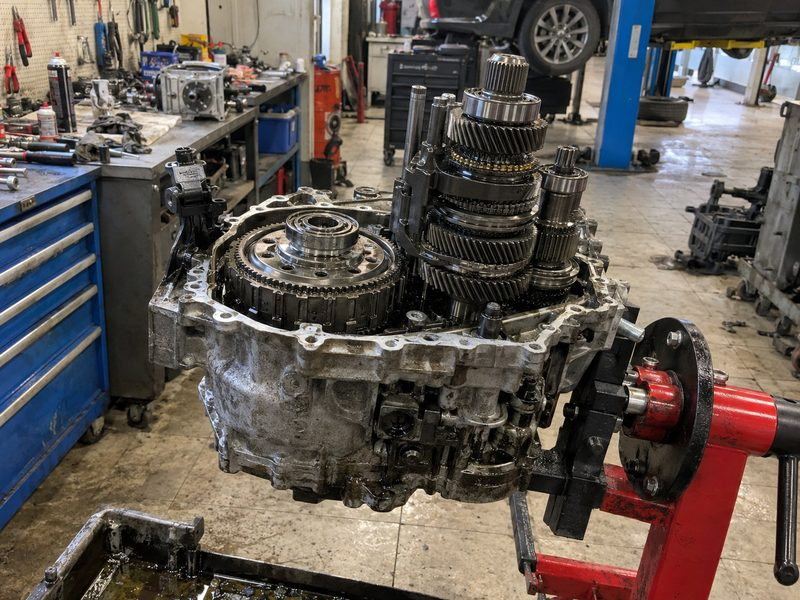
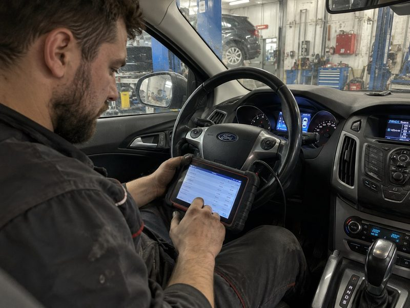

Volkswagen · Audi · Škoda · SEAT01
DSG / S-Tronic
Рывки при старте, вибрация или ошибка коробки? Проверим сцепление, мехатроник и рабочие параметры, чтобы определить причину.

DQ200 · DQ250 · DQ381 · DQ500
DL501 · DL382
DL501 · DL382
Роботизированные коробки передач
От восстановления мехатроника и замены сцепления до капитального ремонта коробки. Выполняем разборку, ремонт, сборку и адаптацию в одном сервисе.
До 24 месяцев гарантии
Условия для вашего ремонта — в документах

Рывки могут быть похожими, а причины — разными. Проверим коробку вашего типа, чтобы понять, какой узел требует ремонта.
Рывки при старте, вибрация или ошибка коробки? Проверим сцепление, мехатроник и рабочие параметры, чтобы определить причину.

Пробуксовка, пропали передачи или включился аварийный режим? Проверим сцепление и управление с учётом типа вашей PowerShift.

Посмотрите цены на основные работы. Точную стоимость согласуем после диагностики — до начала ремонта.
Сначала выясним причину, затем обсудим ремонт.
Блок управления коробкой
Для сухих коробок
Для мокрых коробок
По результатам проверки
Указаны начальные цены. Состав работ и деталей зависит от типа коробки и результатов проверки.
Начните с вашего автомобиля. По модели, году и комплектации уточним тип коробки и подходящий порядок проверки.
DSG
S-Tronic
DSG
DSG
PowerShift
PowerShift
Понимайте, что неисправно, какие работы нужны и сколько они стоят. Дополнительные работы — после отдельного согласования.
До 24 месяцев гарантии
Условия — в ваших документах
Мастер объясняет результаты проверки обычным языком.
Работы, детали и стоимость обсуждаются до начала ремонта.
Только после вашего подтверждения приступаем к работам.
Никаких замен, о которых вы узнаете постфактум.
Посмотрите, с какими узлами связаны основные работы. На диагностике мастер объяснит, что из этого относится к вашему автомобилю.





Назовите автомобиль и опишите поведение коробки. Индекс агрегата и коды ошибок знать необязательно.
Проверим коробку, объясним результаты и согласуем смету. Обсудим сроки до начала работ.
Согласуйте подходящий вариант. Если появятся дополнительные вопросы по ремонту, свяжемся с вами.
После работ проверим коробку, выполним нужные настройки и передадим документы с условиями гарантии.
Не на ходу? Обсудите бесплатный эвакуатор до 100 км. Поможем спланировать доставку автомобиля.
Адреса техцентров
Не нашли свой вопрос?
Опишите ситуацию — обсудим её отдельно.
Диагностика DSG бесплатна. Ремонт начинается после согласования работ и сметы. Если потребуется разборка или отдельная платная операция, её стоимость должна быть согласована заранее. Для PowerShift условия диагностики уточняются отдельно.
Рывки или ошибка на панели могут иметь несколько причин. По описанию можно обсудить возможные варианты, но точную смету составляют после проверки. Важно заранее разделить стоимость работ, деталей и дополнительных операций.
Сначала объясним, что обнаружено, как это влияет на ремонт и сколько будет стоить. Дополнительные работы — после вашего согласия.
Срок зависит от конкретного ремонта и установленных деталей. Точный срок, покрытие и условия эксплуатации фиксируются в документах. Их нужно обсудить до согласования работ.
Доступна рассрочка оплаты на 4 месяца без процентов. Порядок оформления и график платежей обсудим до ремонта.
Эвакуатор бесплатно в пределах 100 км от МКАД при ремонте АКПП в нашем сервисе. Подача в течение 30 минут. При обращении сообщите местонахождение автомобиля и возможность подъезда — согласуем маршрут и детали подачи.
Посмотрите, с какими симптомами обращаются водители и что отмечают после ремонта.
Volkswagen Golf 7DSG-7 · DQ200
На горячую трясло при старте, особенно в пробке. Уже думал, что придётся менять всю коробку. После проверки объяснили, что со сцеплением, заранее обсудили работы и сумму. Теперь трогается плавно — больше не жду каждого толчка.
Ford Focus 3PowerShift · DPS6
Фокус дёргался на первой и задней. Боялся, что после разборки счёт вырастет вдвое. Здесь сначала объяснили причину, согласовали работы и детали. Сумма осталась той, о которой договорились. В потоке машина снова едет спокойно.
Audi A4S-Tronic · DL501
На прогретой машине появлялись толчки, а утром всё было нормально. Переживал, что на диагностике ничего не найдут. Описал, когда это происходит, мастер проверил коробку на горячую. После ремонта переключения стали мягче, стоимость заранее обсудили.
Škoda OctaviaDSG-7 · DQ200
В пробке машина дрожала при трогании. Не понимал, можно ли ещё ездить или уже вызывать эвакуатор. По телефону объяснили порядок проверки, а после диагностики показали, что требует замены. Забрал машину без прежней тряски.
Volkswagen PassatDSG-6 · DQ250
Появилась задержка при включении задней. Больше всего боялся услышать «поменяем всё, а там посмотрим». Здесь объяснили результаты проверки и предложили конкретные работы. Дополнительные замены без звонка не делали, итоговую сумму я знал заранее.
Ford MondeoPowerShift · 6DCT450
После прогрева коробка начала пинаться. Машина нужна каждый день, поэтому сразу спросил про сроки. Рассказали, что будут проверять и когда смогут дать ответ. По ходу ремонта держали в курсе, при выдаче объяснили рекомендации.
SEAT LeonDSG-7 · DQ200
Замигала индикация передач, машина перестала нормально ехать. Думал, что попал на замену коробки целиком. После диагностики объяснили проблему с управлением и согласовали ремонт. Понравилось, что со мной разговаривали понятно, без сложных терминов.

Расскажите о симптомах. Обсудим диагностику, возможный бюджет и следующий шаг — без сложных терминов.